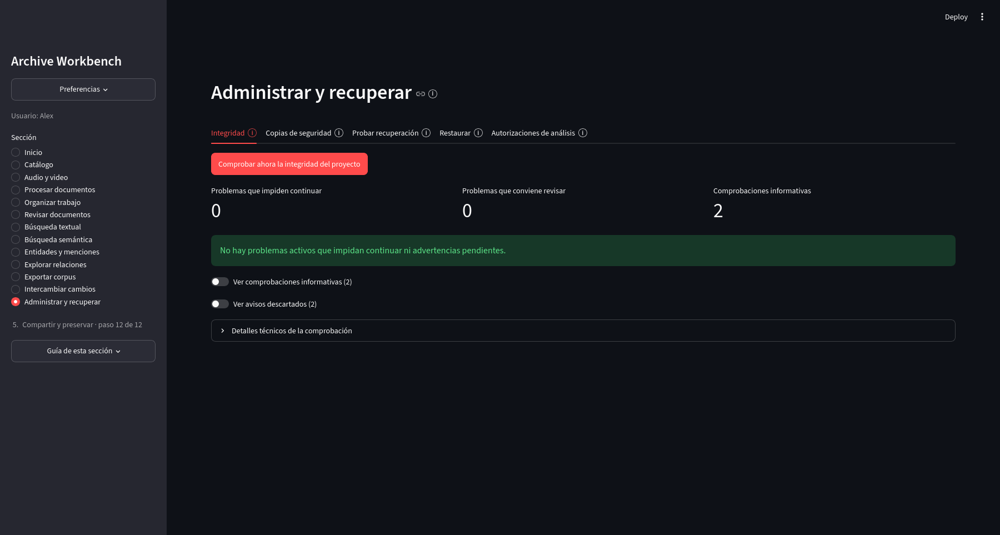
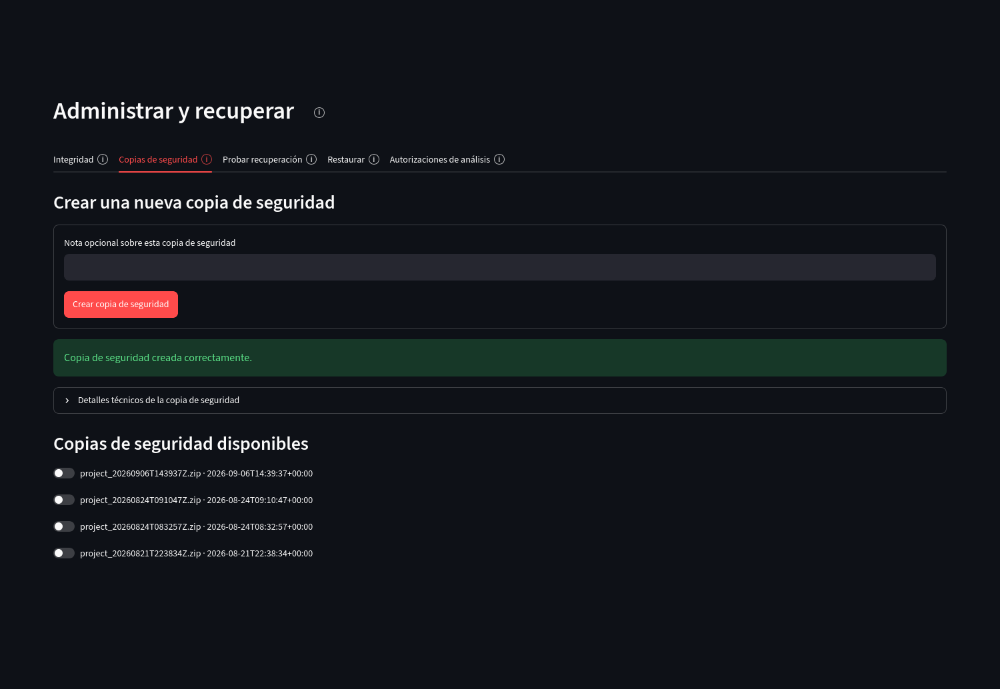
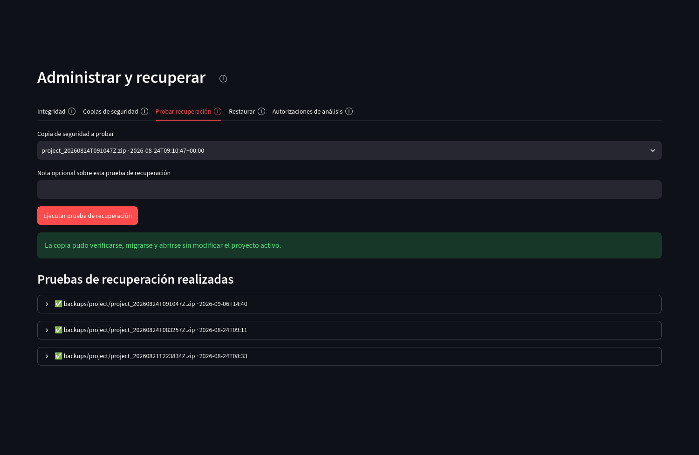

Resultados y preservación
Administrar y recuperar
Esta sección reúne controles de integridad, copias de seguridad y recuperación. También conserva las autorizaciones registradas cuando una búsqueda, exportación u otro análisis automático utilizó un alcance determinado de páginas.
Integridad
Comprobar ahora la integridad del proyecto revisa la base, los archivos y otros componentes necesarios para trabajar. Los resultados separan problemas que impiden continuar, advertencias que conviene revisar y comprobaciones informativas.
{kind=link}

Abrir captura completa
Copias de seguridad
Una copia de seguridad guarda un estado verificable del proyecto. Cada ZIP puede conservar una nota y una huella SHA-256 para comprobar que el archivo no cambió.
{kind=link}

Abrir captura completa
Prueba de recuperación
La prueba abre una copia de seguridad en un entorno temporal. Verifica que pueda abrirse y, si corresponde, migrarse hasta la revisión vigente sin reemplazar el proyecto activo.
{kind=link}

Abrir captura completa
Restauración
La pestaña Restaurar prepara la recuperación de una copia seleccionada. La operación que reemplaza la base activa se ejecuta con la aplicación detenida y conserva antes una copia del estado que estaba en uso.
Autorizaciones de análisis
Las autorizaciones permiten reconstruir por qué un conjunto de páginas participó en una búsqueda semántica, una exportación u otra operación automática. Cada registro conserva responsable, origen, tipo de análisis, alcance utilizado y confirmación, y la lista puede filtrarse sin modificar el historial.